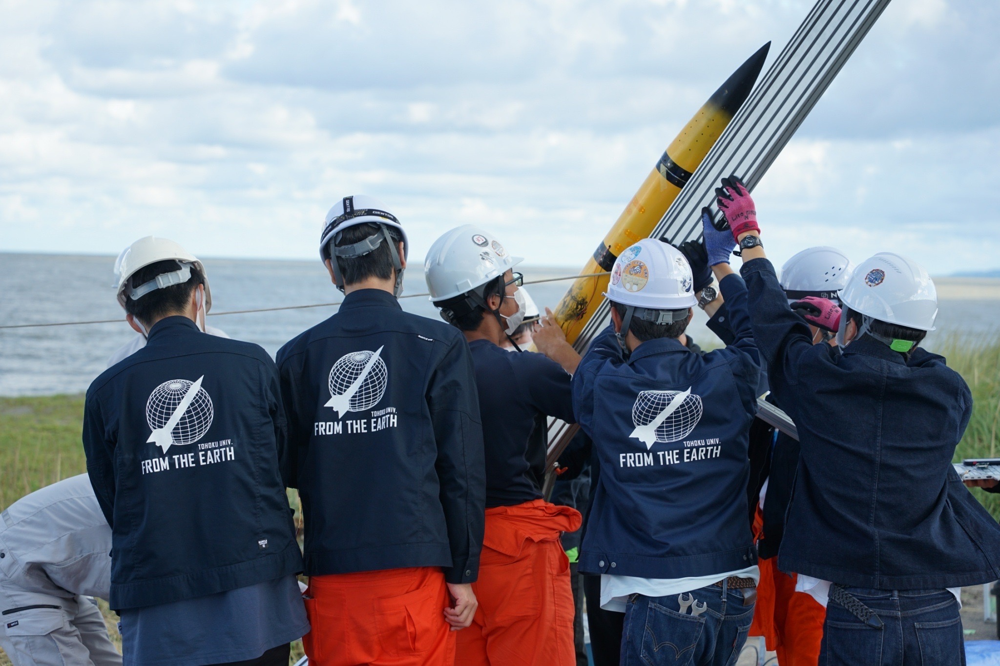
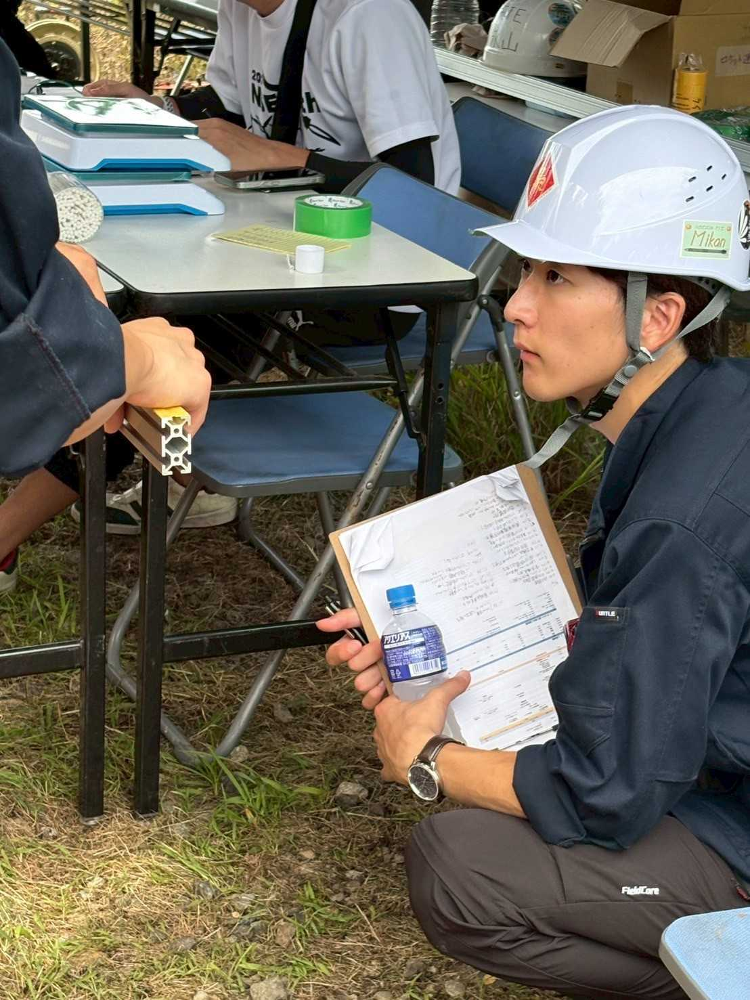

団体概要
- 団体名
- 東北大学 FROM THE EARTH
- 設立
- 2010年12月17日
- 代表
- 玉井航平
- 現役メンバー
- 71人
沿革
- 2022年8月
- 自作エンジン搭載機打ち上げ成功
- 2016年3月
- 第10回伊豆大島共同打上実験初参加
- 2015年11月
- カンサットプロジェクト正式立ち上げ
- 2010年12月
- FROM THE EARTH 設立
代表挨拶

FROM THE EARTHへようこそ、そして宇宙へようこそ。
15期代表の玉井航平です。
「大気圏突破」、「全ての人に夢と感動を与える」。
私たちはこの二つを理念に活動を行っています。
その原動力は何か。
それは、「我々が宇宙を好きでいるから」、結局はその一言なのかも知れません。
かつて誰もがきっと宇宙に憧れ、そして夢見たことでしょう。夜空を見上げて星を見たとき、ロケットの打ち上げ映像を見たとき。些細なことでも、確かにそれはあったはずです。
我々が宇宙を感じるとき、自分の存在がいかにちっぽけなものなのかを痛感するとともに、その広大さに惹かれます。
私たちの団体では、その「好き」という純粋な感情から、「自分も宇宙に関わりたい」、そして、ここ東北大学から宇宙の素晴らしさを広げたいという強い気持ちを持った学生が集まり、日々活動しています。
FROM THE
EARTHでは、主にハイブリッドロケットの製作・打上およびCanSatの製作・大会出場に取り組んでおり、それぞれのプロジェクトでは自分たちでミッションを課し、それを達成するべく活動を行っています。
本ホームページの「Project」には、これまでF.T.E.が行ってきたさまざまなプロジェクトを掲載していますので、是非ご覧ください。
我々は、宇宙に関連した"モノづくり"を身をもって体験する中で、工学的知識だけでなく、プロジェクトを進める上で重要なことを学び、一人のエンジニアとしての成長も目指します。同じ気持ちを持った仲間たちと時に協力し合い、ときにぶつかり合いながら、一つの目標に向かってプロジェクトを進めています。
さらに、自分たちだけが楽しむのではなく、宇宙の素晴らしさや、モノづくりの楽しさをいかに広く伝えるかということにも重きを置いています。その最たるものが、近隣の小中学校でのペットボトルロケットやモデルロケット教室です。
子供たちにとって、「宇宙って面白い！」と思ってもらえる、そんなきっかけを作れるよう、様々な活動を展開しています。
FROM THE EARTHは、会社でも研究室でもなく、サークルだからこそ、その人の「好き」という気持ちを大切にし、それを行動に変え、何かに本気になれるような場所を目指します。
最後になりますが、私たちの活動は多くの方々のご支援とご理解の上で成り立っております。私たちの理念・活動に共感し、応援してくださる全ての方々に感謝を申し上げます。皆様のご希望・ご信頼に沿える団体であれるよう精進して参りますので、今後ともどうぞよろしくお願いいたします。
15期代表 玉井航平
Contact
メールにてお気軽にお問い合わせください。